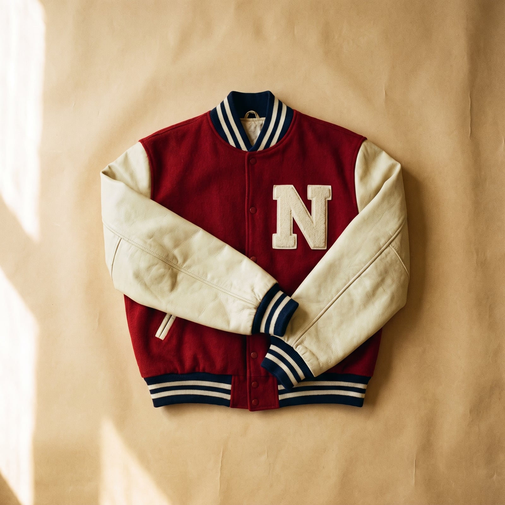
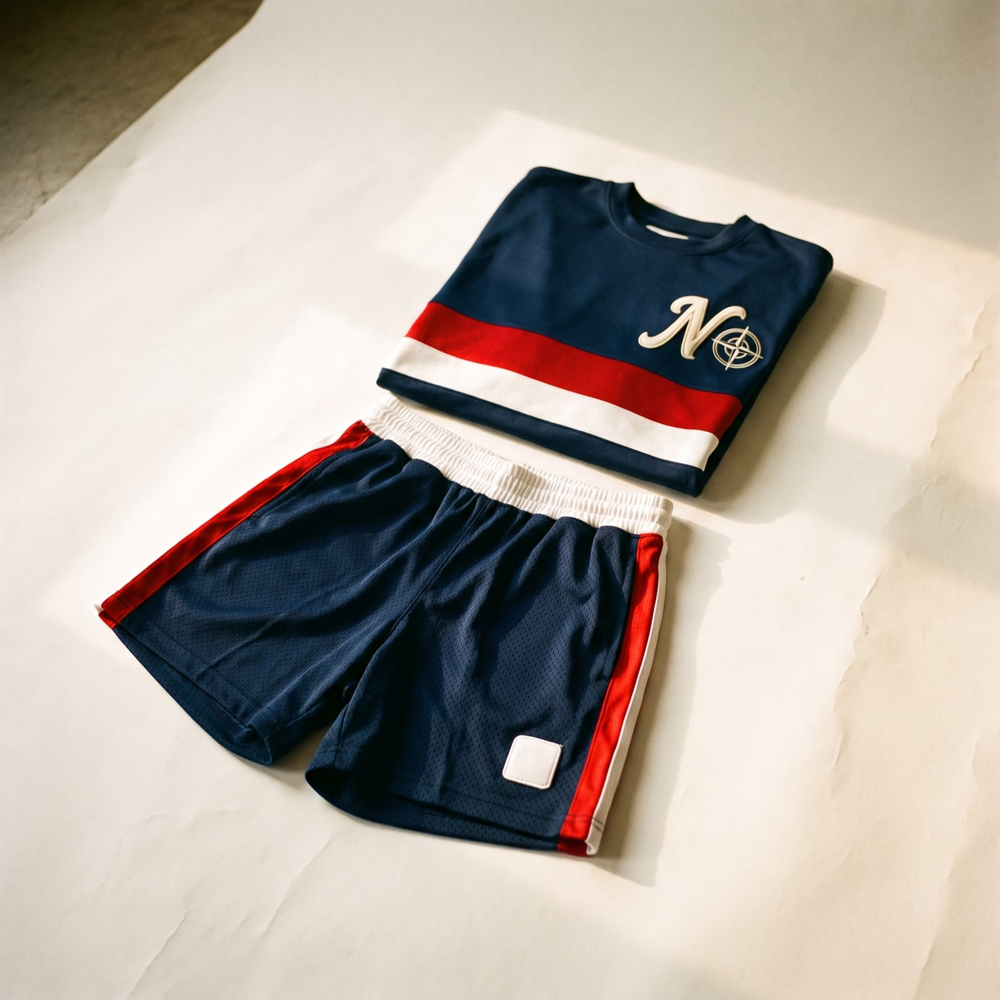
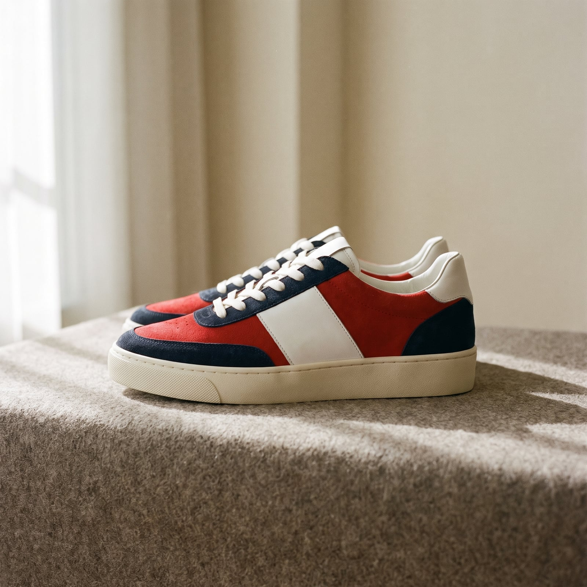
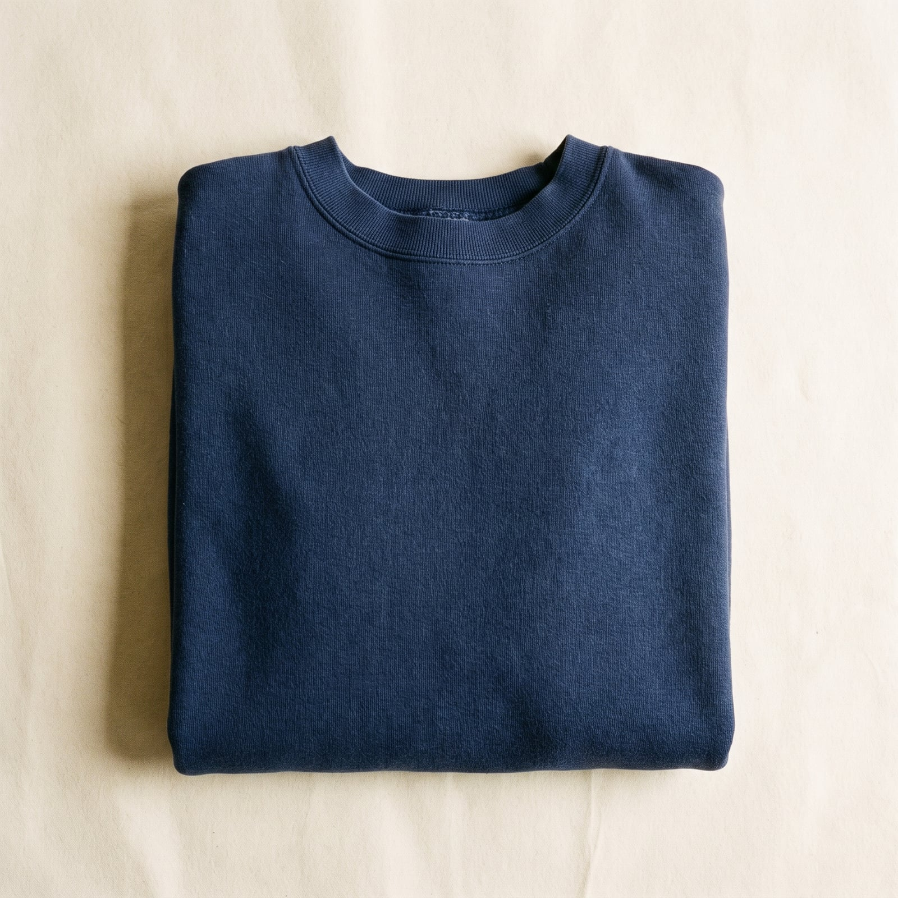
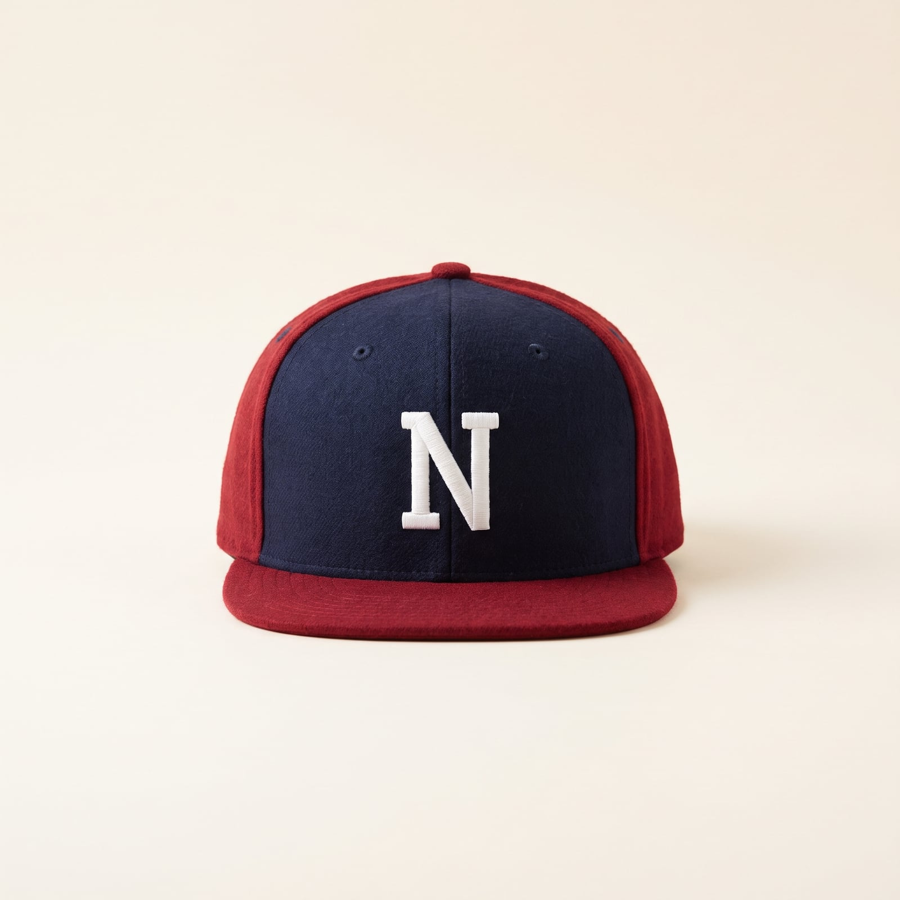

The Athlete
Retro sportswear draws on two overlapping traditions — the varsity jacket, an American invention dating to Harvard's baseball team in 1865, awarded rather than bought, and worn as a literal record of achievement — and the rise of branded athletic wear through the twentieth century, as Adidas and later Nike turned performance equipment into something worn as much off the field as on it. Basketball culture in particular, from the playground to the NBA, spent the 1980s and '90s turning sneakers and warm-ups into a genuine style category with its own hierarchy and expertise.
The trademark features carry their sporting origin without much disguise: a varsity jacket with wool body and leather sleeves, mesh shorts and jerseys worn as everyday clothing rather than uniform, sneakers chosen with the same seriousness other wardrobes reserve for shoes that cost ten times as much. Team colors and logos function the way a family crest might elsewhere — a declared allegiance, worn proudly.
It suits people who never made peace with leaving sport behind, or never needed to — who see comfort and performance as legitimate values rather than concessions. There's a real community in it, too: this wardrobe usually means something to someone else looking at it, a shared history the outfit doesn't need to explain out loud.
- Varsity jackets, wool body and leather sleeves, worn as record and garment both
- Team jerseys and mesh shorts worn well outside the game itself
- Sneakers chosen and maintained with real expertise
- Sweatshirts and warm-up gear treated as legitimate daily wear
- Team colors and logos worn as a declared allegiance


The Varsity Jacket
Harvard's baseball team introduced the letterman jacket in 1865, awarding a large wool letter to players as a genuine record of achievement rather than a purchasable garment — the wool-body, leather-sleeve construction has stayed remarkably consistent for over 150 years.
The silhouette at an accessible price, often with synthetic sleeves.
Shop this →Genuine wool body and leather sleeves, often licensed team versions.
Shop this →Made to order with real chenille lettering and premium materials.
Shop this →
The Team Jersey or Mesh Short
Worn as everyday clothing rather than reserved for the game itself, a team jersey or mesh short treats athletic uniform the way a family crest functions elsewhere — a declared, visible allegiance.
Genuine licensed team graphics at an accessible price.
Shop this →Better fabric and more historically accurate team detailing.
Shop this →Exact reproductions of specific historical uniforms, stitched rather than printed.
Shop this →
The Sneaker
Basketball sneaker culture built a genuine hierarchy of expertise around silhouette and colorway history through the 1980s and '90s, turning shoe choice into as much a display of knowledge as of taste.
Genuine design pedigree at a broadly accessible price.
Shop this →Scarcity-priced pieces verified through platforms like StockX or GOAT.
Shop this →
The Sweatshirt or Warm-Up
Champion's reverse-weave construction, developed in the 1930s to resist the shrinking that plagued ordinary sweatshirts, became a genuine wardrobe staple once its durability outlasted its purely athletic original purpose.
Genuine heavyweight cotton blend at an accessible price.
Shop this →The actual construction the category is named for, largely unchanged since the 1930s.
Shop this →Heavier, more considered fleece construction with obsessive attention to detail.
Shop this →
The Team Cap
A structured, team-branded cap worn as everyday headwear turns the same allegiance logic as the jersey into something wearable year-round, regardless of season or sport schedule.
Genuine team licensing at an accessible price.
Shop this →The fitted cap most associated with authentic on-field team gear.
Shop this →Discontinued logos or eras sourced through specialist vintage dealers.
Shop this →Buy the varsity jacket and team gear from an era or team that actually means something personally — a real connection to the team is what separates this wardrobe from costume, and it shows in the details people ask about. Let sneakers get chosen and maintained with genuine expertise; the care is the actual skill on display here, not just the shoe itself.
Wear sweatshirts and warm-up gear as legitimate daily wear rather than only for actual exercise — this wardrobe treats athletic gear as real clothing, and half-committing to that undercuts the whole premise.
Don't wear a team's colors and logo without any real connection to or knowledge of that team — this wardrobe reads as authentic allegiance, and it falls apart under even light questioning if the loyalty turns out to be purely aesthetic.
This is an emphatically casual wardrobe, and it reads as a genuine mismatch in a formal context — a varsity jacket and mesh shorts at anything requiring real dress-up just look like a wrong turn, not an intentional contrast. Keep it where the informality is expected.
Mesh jersey and shorts alone, the varsity jacket and sweatshirt both staying in the closet until the temperature actually requires them.
The varsity jacket layers over the sweatshirt, sweatpants replace shorts, and the sneaker rotation shifts toward a warmer, higher-top silhouette.
A team-branded rain shell, if one exists; if not, the hood goes up on the sweatshirt and the game continues regardless.
Full warm-up gear, insulated sneakers or actual boots for once, and the varsity jacket doing real structural work rather than just aesthetic.
The cleanest, newest version of the sneakers, a collared shirt under the varsity jacket instead of a tee -- this wardrobe's idea of black tie is "presentable."

Wherever the tournament or the team's away game is, scheduled around the season with a devotion most people reserve for holidays.
A genuine pilgrimage to at least one hall of fame gets planned and treated with real reverence, photographed extensively, discussed for years after.
Sports biographies almost exclusively, and box scores read the way other people read the news — first thing, every day, without fail.
Not much else, by choice; a novel gets picked up occasionally but rarely finishes ahead of whatever game is on that night.
Find it on Amazon →Whatever's on the pregame playlist — hip-hop and hype tracks, chosen for energy over nuance, loud enough to actually feel it.
A specific song becomes permanently associated with a specific win, and gets requested at parties for years afterward for exactly that reason.
Listen on YouTube →A den built around a big screen and team memorabilia, with trophies actually displayed rather than boxed away in storage.
A fridge stocked for game day specifically, restocked the same way every single week without much variation.
See more on Pinterest →Pickup games that never really stopped since high school, showing up weekly with the same rotating group for longer than anyone's tracked.
Fantasy leagues taken seriously, run with real research, and sneaker maintenance treated as a genuine, almost meditative ritual.